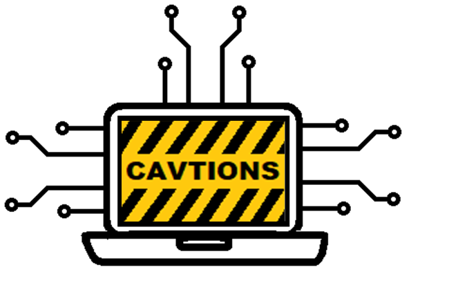

Ciberamenazas AVanzadas: analíTIca de mecanismOs y víNculos Sociopolíticos
 29 de Septiembre. Online (enlace)
1º Sesión (9'30) - Presentación
Lorena González. Prof. Informática de la Universidad Carlos III de Madrid.
Florabel Quispe. Prof. Derecho Internacional Público y Relaciones Internacionales de la Universidad Carlos III de Madrid.
2ª Sesión (9'45) - Panorámica de la situación de ciberseguridad
Rafael Calzada. Responsable de Seguridad de la Información de la Universidad Carlos III de Madrid.
3ª Sesión (10'45) - Panorámica de la situación socio-política
Carlos Liesa. Catedrático de Derecho Internacional Público y Relaciones Internacionales de la Universidad Carlos III de Madrid.
DESCANSO (11'30)
4ª Sesión (12'00) - Mesa redonda: Ciberataques: presente y futuro
Arturo Ribagorda. Catedrático Emérito de la Universidad Carlos III de Madrid.
David Ramírez. Analista en el Instituto Español de Estudios Estratégicos (IEEE).
Marcos Gómez. Subdirector Servicios de Ciberseguridad en INCIBE
Miguel Bañón. Consultor independiente, ex-Director de Epoche & Espri
Juan E. Tapiador. Catedrático de la Universidad Carlos III de Madrid.
5ª Sesión (13'00) - Amenazas persistentes avanzadas: un punto de vista técnico y modelo analítico
Lorena González. Prof. Informática de la Universidad Carlos III de Madrid.
José M. de Fuentes. Prof. Informática de la Universidad Carlos III de Madrid.
6ª Sesión (13'30) - Cierre
Lorena González. Prof. Informática de la Universidad Carlos III de Madrid.
Florabel Quispe. Prof. Derecho Internacional Público y Relaciones Internacionales de la Universidad Carlos III de Madrid.
Dpto. Informática. Computer Security Lab (COSEC)
Dpto. de Dº Internacional, Eclesiástico y Fª del Dº
Instituto de Estudios Internacionales y Europeos Francisco de Vitoria (UC3M)
Acción financiada por la Comunidad de Madrid a través de la línea "Estímulo a la Investigación de Jóvenes Doctores" del Convenio Plurianual con la UC3M (ACRONIMO-CM-UC3M), en el marco del V PRICIT (V Plan Regional de Investigación Científica e Innovación Tecnológica